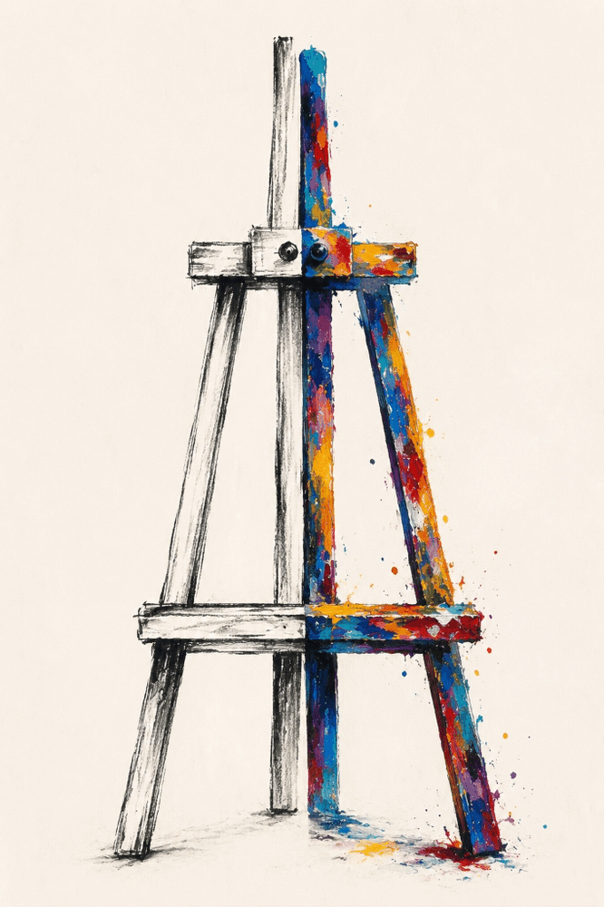

Tu Concepto

01
El Caballete del Artista (Tal cual)
"Una pureza y poesía brutales. El origen de toda creación expresado en un solo objeto."
Tu propuesta es **sencillamente magistral**. La división vertical del caballete (el lado izquierdo en un boceto a lápiz/carbón sumamente estructurado y el lado derecho en una explosión vibrante de óleo e impasto con salpicaduras) sintetiza de forma impecable el nacimiento de la obra: del plano mental y técnico a la materia, la emoción y el color.
Como cuadro flotante sin marco sobre la pared alabastro de tu página, tiene un impacto limpio, sobrio y con el peso histórico de los grandes talleres de pintura.
- Poética pura: Representa el acto sagrado de pintar sin intermediarios.
- Equilibrio perfecto: El contraste entre el carbón y la textura densa del óleo.
- Limpieza estética: Sin elementos que distraigan del objeto central.